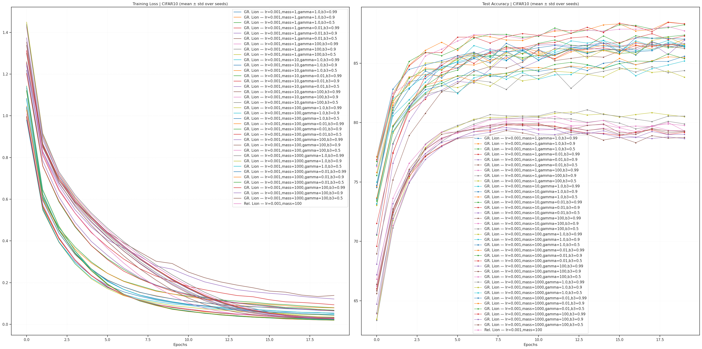
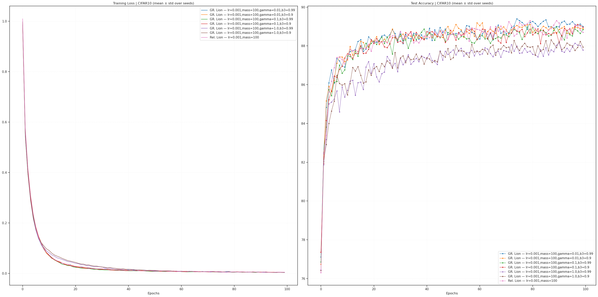

GRA: lion — Rel vs GR#
project = GRA, host = mach, device = cuda:1
Goals:#
Test these Lion extensions:
relativistic vs. general relativistic
on CIFAR10
device_idx = 1
device = f'cuda:{device_idx}'
print(f"device: {device} ——— host: {os.uname().nodename}")
device: cuda:1 ——— host: mach
Main#
from optimzers import *
from test.test import *
cfg = TrainConfig(
dataset='CIFAR10',
# dataset='ImageNet32',
batch_size=256,
epochs=20,
device=device,
data_on_device=True,
verbose=True,
amp=False,
)
experiments_gr_lion = [
Experiment(
f"GR. Lion — lr={lr},mass={m},gamma={g},b3={b3}",
make_opt(GeneralRelativisticLion, lr=lr, mass=m, gamma=g, beta_gravity=b3, betas=(0.8, 0.99)),
) for lr, m, g, b3 in itertools.product([1e-3], [1, 10, 100, 1000], [1.0, 0.01, 100], [0.99, 0.9, 0.5])
]
experiments_rel_lion = [
Experiment(
f"Rel. Lion — lr={lr},mass={m}",
make_opt(RelativisticLion, lr=lr, mass=m, betas=(0.8, 0.99), use_curvature=False),
) for lr, m in itertools.product([1e-3], [100])
]
experiments = experiments_gr_lion + experiments_rel_lion
len(experiments)
37
print(experiments)
[ Experiment( name='GR. Lion — lr=0.001,mass=1,gamma=1.0,b3=0.99', opt_fn=<function make_opt.<locals>._fn at 0x7dfea2124d60> ), Experiment( name='GR. Lion — lr=0.001,mass=1,gamma=1.0,b3=0.9', opt_fn=<function make_opt.<locals>._fn at 0x7dfea2125120> ), Experiment( name='GR. Lion — lr=0.001,mass=1,gamma=1.0,b3=0.5', opt_fn=<function make_opt.<locals>._fn at 0x7dfea2124e00> ), Experiment( name='GR. Lion — lr=0.001,mass=1,gamma=0.01,b3=0.99', opt_fn=<function make_opt.<locals>._fn at 0x7dfea21251c0> ), Experiment( name='GR. Lion — lr=0.001,mass=1,gamma=0.01,b3=0.9', opt_fn=<function make_opt.<locals>._fn at 0x7dfea2125260> ), Experiment( name='GR. Lion — lr=0.001,mass=1,gamma=0.01,b3=0.5', opt_fn=<function make_opt.<locals>._fn at 0x7dfea2125300> ), Experiment( name='GR. Lion — lr=0.001,mass=1,gamma=100,b3=0.99', opt_fn=<function make_opt.<locals>._fn at 0x7dfea21253a0> ), Experiment( name='GR. Lion — lr=0.001,mass=1,gamma=100,b3=0.9', opt_fn=<function make_opt.<locals>._fn at 0x7dfea21254e0> ), Experiment( name='GR. Lion — lr=0.001,mass=1,gamma=100,b3=0.5', opt_fn=<function make_opt.<locals>._fn at 0x7dfea2125620> ), Experiment( name='GR. Lion — lr=0.001,mass=10,gamma=1.0,b3=0.99', opt_fn=<function make_opt.<locals>._fn at 0x7dfea21256c0> ), Experiment( name='GR. Lion — lr=0.001,mass=10,gamma=1.0,b3=0.9', opt_fn=<function make_opt.<locals>._fn at 0x7dfea2125760> ), Experiment( name='GR. Lion — lr=0.001,mass=10,gamma=1.0,b3=0.5', opt_fn=<function make_opt.<locals>._fn at 0x7dfea2125800> ), Experiment( name='GR. Lion — lr=0.001,mass=10,gamma=0.01,b3=0.99', opt_fn=<function make_opt.<locals>._fn at 0x7dfea21258a0> ), Experiment( name='GR. Lion — lr=0.001,mass=10,gamma=0.01,b3=0.9', opt_fn=<function make_opt.<locals>._fn at 0x7dfea21259e0> ), Experiment( name='GR. Lion — lr=0.001,mass=10,gamma=0.01,b3=0.5', opt_fn=<function make_opt.<locals>._fn at 0x7dfea2125b20> ), Experiment( name='GR. Lion — lr=0.001,mass=10,gamma=100,b3=0.99', opt_fn=<function make_opt.<locals>._fn at 0x7dfea2125bc0> ), Experiment( name='GR. Lion — lr=0.001,mass=10,gamma=100,b3=0.9', opt_fn=<function make_opt.<locals>._fn at 0x7dfea2125c60> ), Experiment( name='GR. Lion — lr=0.001,mass=10,gamma=100,b3=0.5', opt_fn=<function make_opt.<locals>._fn at 0x7dfea2125d00> ), Experiment( name='GR. Lion — lr=0.001,mass=100,gamma=1.0,b3=0.99', opt_fn=<function make_opt.<locals>._fn at 0x7dfea2125da0> ), Experiment( name='GR. Lion — lr=0.001,mass=100,gamma=1.0,b3=0.9', opt_fn=<function make_opt.<locals>._fn at 0x7dfea2125e40> ), Experiment( name='GR. Lion — lr=0.001,mass=100,gamma=1.0,b3=0.5', opt_fn=<function make_opt.<locals>._fn at 0x7dfea2125ee0> ), Experiment( name='GR. Lion — lr=0.001,mass=100,gamma=0.01,b3=0.99', opt_fn=<function make_opt.<locals>._fn at 0x7dfea2125f80> ), Experiment( name='GR. Lion — lr=0.001,mass=100,gamma=0.01,b3=0.9', opt_fn=<function make_opt.<locals>._fn at 0x7dfea2126020> ), Experiment( name='GR. Lion — lr=0.001,mass=100,gamma=0.01,b3=0.5', opt_fn=<function make_opt.<locals>._fn at 0x7dfea21260c0> ), Experiment( name='GR. Lion — lr=0.001,mass=100,gamma=100,b3=0.99', opt_fn=<function make_opt.<locals>._fn at 0x7dfea2126160> ), Experiment( name='GR. Lion — lr=0.001,mass=100,gamma=100,b3=0.9', opt_fn=<function make_opt.<locals>._fn at 0x7dfea2126200> ), Experiment( name='GR. Lion — lr=0.001,mass=100,gamma=100,b3=0.5', opt_fn=<function make_opt.<locals>._fn at 0x7dfea21262a0> ), Experiment( name='GR. Lion — lr=0.001,mass=1000,gamma=1.0,b3=0.99', opt_fn=<function make_opt.<locals>._fn at 0x7dfea2126340> ), Experiment( name='GR. Lion — lr=0.001,mass=1000,gamma=1.0,b3=0.9', opt_fn=<function make_opt.<locals>._fn at 0x7dfea21263e0> ), Experiment( name='GR. Lion — lr=0.001,mass=1000,gamma=1.0,b3=0.5', opt_fn=<function make_opt.<locals>._fn at 0x7dfea2126480> ), Experiment( name='GR. Lion — lr=0.001,mass=1000,gamma=0.01,b3=0.99', opt_fn=<function make_opt.<locals>._fn at 0x7dfea2126520> ), Experiment( name='GR. Lion — lr=0.001,mass=1000,gamma=0.01,b3=0.9', opt_fn=<function make_opt.<locals>._fn at 0x7dfea21265c0> ), Experiment( name='GR. Lion — lr=0.001,mass=1000,gamma=0.01,b3=0.5', opt_fn=<function make_opt.<locals>._fn at 0x7dfea2126660> ), Experiment( name='GR. Lion — lr=0.001,mass=1000,gamma=100,b3=0.99', opt_fn=<function make_opt.<locals>._fn at 0x7dfea2126700> ), Experiment( name='GR. Lion — lr=0.001,mass=1000,gamma=100,b3=0.9', opt_fn=<function make_opt.<locals>._fn at 0x7dfea21267a0> ), Experiment( name='GR. Lion — lr=0.001,mass=1000,gamma=100,b3=0.5', opt_fn=<function make_opt.<locals>._fn at 0x7dfea2126840> ), Experiment(name='Rel. Lion — lr=0.001,mass=100', opt_fn=<function make_opt.<locals>._fn at 0x7dfea436d440>) ]
results = run_experiments(experiments, cfg=cfg, seeds=[0])
--- Training (CIFAR10) --- Model: ConvNet | seed=0 Optimizer: GeneralRelativisticLion
GeneralRelativisticLion ( Parameter Group 0 beta_gravity: 0.99 betas: (0.8, 0.99) gamma: 1.0 lr: 0.001 mass: 1 weight_decay: 0.0 )
Epoch 1/20: Train Loss 1.0835 | Test Acc 74.54%
Epoch 2/20: Train Loss 0.6138 | Test Acc 80.82%
Epoch 3/20: Train Loss 0.4504 | Test Acc 82.84%
Epoch 4/20: Train Loss 0.3425 | Test Acc 84.35%
Epoch 5/20: Train Loss 0.2665 | Test Acc 83.77%
Epoch 6/20: Train Loss 0.2086 | Test Acc 85.01%
Epoch 7/20: Train Loss 0.1677 | Test Acc 85.40%
Epoch 8/20: Train Loss 0.1405 | Test Acc 85.04%
Epoch 9/20: Train Loss 0.1231 | Test Acc 86.02%
Epoch 10/20: Train Loss 0.1083 | Test Acc 85.23%
Epoch 11/20: Train Loss 0.0965 | Test Acc 86.11%
Epoch 12/20: Train Loss 0.0889 | Test Acc 85.67%
Epoch 13/20: Train Loss 0.0813 | Test Acc 86.29%
Epoch 14/20: Train Loss 0.0769 | Test Acc 86.53%
Epoch 15/20: Train Loss 0.0715 | Test Acc 86.45%
Epoch 16/20: Train Loss 0.0671 | Test Acc 86.35%
Epoch 17/20: Train Loss 0.0610 | Test Acc 85.69%
Epoch 18/20: Train Loss 0.0576 | Test Acc 86.82%
Epoch 19/20: Train Loss 0.0555 | Test Acc 86.40%
Epoch 20/20: Train Loss 0.0539 | Test Acc 86.51%
Finished in 104.5s
--- Training (CIFAR10) --- Model: ConvNet | seed=0 Optimizer: GeneralRelativisticLion
GeneralRelativisticLion ( Parameter Group 0 beta_gravity: 0.9 betas: (0.8, 0.99) gamma: 1.0 lr: 0.001 mass: 1 weight_decay: 0.0 )
Epoch 1/20: Train Loss 1.0467 | Test Acc 74.62%
Epoch 2/20: Train Loss 0.5971 | Test Acc 81.69%
Epoch 3/20: Train Loss 0.4381 | Test Acc 83.85%
Epoch 4/20: Train Loss 0.3344 | Test Acc 84.05%
Epoch 5/20: Train Loss 0.2629 | Test Acc 83.92%
Epoch 6/20: Train Loss 0.2131 | Test Acc 84.91%
Epoch 7/20: Train Loss 0.1789 | Test Acc 84.85%
Epoch 8/20: Train Loss 0.1527 | Test Acc 85.29%
Epoch 9/20: Train Loss 0.1372 | Test Acc 85.44%
Epoch 10/20: Train Loss 0.1222 | Test Acc 85.84%
Epoch 11/20: Train Loss 0.1106 | Test Acc 85.86%
Epoch 12/20: Train Loss 0.1025 | Test Acc 85.35%
Epoch 13/20: Train Loss 0.0945 | Test Acc 85.96%
Epoch 14/20: Train Loss 0.0913 | Test Acc 86.24%
Epoch 15/20: Train Loss 0.0851 | Test Acc 86.52%
Epoch 16/20: Train Loss 0.0795 | Test Acc 86.41%
Epoch 17/20: Train Loss 0.0764 | Test Acc 86.55%
Epoch 18/20: Train Loss 0.0738 | Test Acc 86.19%
Epoch 19/20: Train Loss 0.0676 | Test Acc 86.48%
Epoch 20/20: Train Loss 0.0648 | Test Acc 87.02%
Finished in 105.8s
--- Training (CIFAR10) --- Model: ConvNet | seed=0 Optimizer: GeneralRelativisticLion
GeneralRelativisticLion ( Parameter Group 0 beta_gravity: 0.5 betas: (0.8, 0.99) gamma: 1.0 lr: 0.001 mass: 1 weight_decay: 0.0 )
Epoch 1/20: Train Loss 1.0385 | Test Acc 75.55%
Epoch 2/20: Train Loss 0.6068 | Test Acc 81.05%
Epoch 3/20: Train Loss 0.4631 | Test Acc 83.76%
Epoch 4/20: Train Loss 0.3706 | Test Acc 84.47%
Epoch 5/20: Train Loss 0.2992 | Test Acc 84.43%
Epoch 6/20: Train Loss 0.2446 | Test Acc 85.39%
Epoch 7/20: Train Loss 0.2071 | Test Acc 85.84%
Epoch 8/20: Train Loss 0.1845 | Test Acc 85.65%
Epoch 9/20: Train Loss 0.1615 | Test Acc 85.68%
Epoch 10/20: Train Loss 0.1455 | Test Acc 85.48%
Epoch 11/20: Train Loss 0.1351 | Test Acc 85.67%
Epoch 12/20: Train Loss 0.1266 | Test Acc 85.65%
Epoch 13/20: Train Loss 0.1173 | Test Acc 86.21%
Epoch 14/20: Train Loss 0.1113 | Test Acc 85.87%
Epoch 15/20: Train Loss 0.1062 | Test Acc 86.13%
Epoch 16/20: Train Loss 0.0983 | Test Acc 85.82%
Epoch 17/20: Train Loss 0.0946 | Test Acc 85.92%
Epoch 18/20: Train Loss 0.0885 | Test Acc 86.60%
Epoch 19/20: Train Loss 0.0835 | Test Acc 86.31%
Epoch 20/20: Train Loss 0.0797 | Test Acc 86.41%
Finished in 103.5s
--- Training (CIFAR10) --- Model: ConvNet | seed=0 Optimizer: GeneralRelativisticLion
GeneralRelativisticLion ( Parameter Group 0 beta_gravity: 0.99 betas: (0.8, 0.99) gamma: 0.01 lr: 0.001 mass: 1 weight_decay: 0.0 )
Epoch 1/20: Train Loss 1.2535 | Test Acc 69.58%
Epoch 2/20: Train Loss 0.8118 | Test Acc 77.48%
Epoch 3/20: Train Loss 0.6433 | Test Acc 80.91%
Epoch 4/20: Train Loss 0.5325 | Test Acc 81.96%
Epoch 5/20: Train Loss 0.4398 | Test Acc 84.22%
Epoch 6/20: Train Loss 0.3724 | Test Acc 84.62%
Epoch 7/20: Train Loss 0.3131 | Test Acc 85.56%
Epoch 8/20: Train Loss 0.2667 | Test Acc 85.83%
Epoch 9/20: Train Loss 0.2312 | Test Acc 86.21%
Epoch 10/20: Train Loss 0.2063 | Test Acc 86.30%
Epoch 11/20: Train Loss 0.1820 | Test Acc 85.66%
Epoch 12/20: Train Loss 0.1659 | Test Acc 85.40%
Epoch 13/20: Train Loss 0.1514 | Test Acc 86.10%
Epoch 14/20: Train Loss 0.1381 | Test Acc 86.16%
Epoch 15/20: Train Loss 0.1320 | Test Acc 86.30%
Epoch 16/20: Train Loss 0.1179 | Test Acc 86.04%
Epoch 17/20: Train Loss 0.1078 | Test Acc 86.48%
Epoch 18/20: Train Loss 0.1048 | Test Acc 86.39%
Epoch 19/20: Train Loss 0.1000 | Test Acc 86.64%
Epoch 20/20: Train Loss 0.0937 | Test Acc 86.37%
Finished in 104.0s
--- Training (CIFAR10) --- Model: ConvNet | seed=0 Optimizer: GeneralRelativisticLion
GeneralRelativisticLion ( Parameter Group 0 beta_gravity: 0.9 betas: (0.8, 0.99) gamma: 0.01 lr: 0.001 mass: 1 weight_decay: 0.0 )
Epoch 1/20: Train Loss 1.2399 | Test Acc 68.09%
Epoch 2/20: Train Loss 0.8229 | Test Acc 76.58%
Epoch 3/20: Train Loss 0.6658 | Test Acc 80.14%
Epoch 4/20: Train Loss 0.5492 | Test Acc 82.15%
Epoch 5/20: Train Loss 0.4664 | Test Acc 82.73%
Epoch 6/20: Train Loss 0.4044 | Test Acc 83.47%
Epoch 7/20: Train Loss 0.3660 | Test Acc 83.34%
Epoch 8/20: Train Loss 0.3257 | Test Acc 84.50%
Epoch 9/20: Train Loss 0.2797 | Test Acc 85.61%
Epoch 10/20: Train Loss 0.2643 | Test Acc 84.62%
Epoch 11/20: Train Loss 0.2324 | Test Acc 85.23%
Epoch 12/20: Train Loss 0.2036 | Test Acc 86.29%
Epoch 13/20: Train Loss 0.1852 | Test Acc 86.11%
Epoch 14/20: Train Loss 0.1662 | Test Acc 86.27%
Epoch 15/20: Train Loss 0.1567 | Test Acc 86.16%
Epoch 16/20: Train Loss 0.1489 | Test Acc 86.18%
Epoch 17/20: Train Loss 0.1430 | Test Acc 86.12%
Epoch 18/20: Train Loss 0.1338 | Test Acc 86.66%
Epoch 19/20: Train Loss 0.1272 | Test Acc 85.73%
Epoch 20/20: Train Loss 0.1214 | Test Acc 86.93%
Finished in 105.3s
--- Training (CIFAR10) --- Model: ConvNet | seed=0 Optimizer: GeneralRelativisticLion
GeneralRelativisticLion ( Parameter Group 0 beta_gravity: 0.5 betas: (0.8, 0.99) gamma: 0.01 lr: 0.001 mass: 1 weight_decay: 0.0 )
Epoch 1/20: Train Loss 1.2595 | Test Acc 68.96%
Epoch 2/20: Train Loss 0.8658 | Test Acc 75.18%
Epoch 3/20: Train Loss 0.7011 | Test Acc 78.91%
Epoch 4/20: Train Loss 0.5846 | Test Acc 80.78%
Epoch 5/20: Train Loss 0.5137 | Test Acc 82.59%
Epoch 6/20: Train Loss 0.4425 | Test Acc 83.32%
Epoch 7/20: Train Loss 0.3911 | Test Acc 84.31%
Epoch 8/20: Train Loss 0.3462 | Test Acc 84.72%
Epoch 9/20: Train Loss 0.3025 | Test Acc 84.60%
Epoch 10/20: Train Loss 0.2916 | Test Acc 85.10%
Epoch 11/20: Train Loss 0.2505 | Test Acc 86.17%
Epoch 12/20: Train Loss 0.2237 | Test Acc 85.22%
Epoch 13/20: Train Loss 0.2032 | Test Acc 85.41%
Epoch 14/20: Train Loss 0.1881 | Test Acc 85.60%
Epoch 15/20: Train Loss 0.1751 | Test Acc 85.51%
Epoch 16/20: Train Loss 0.1595 | Test Acc 86.02%
Epoch 17/20: Train Loss 0.1543 | Test Acc 86.28%
Epoch 18/20: Train Loss 0.1402 | Test Acc 86.76%
Epoch 19/20: Train Loss 0.1334 | Test Acc 86.42%
Epoch 20/20: Train Loss 0.1385 | Test Acc 86.25%
Finished in 105.4s
--- Training (CIFAR10) --- Model: ConvNet | seed=0 Optimizer: GeneralRelativisticLion
GeneralRelativisticLion ( Parameter Group 0 beta_gravity: 0.99 betas: (0.8, 0.99) gamma: 100 lr: 0.001 mass: 1 weight_decay: 0.0 )
Epoch 1/20: Train Loss 1.3103 | Test Acc 66.23%
Epoch 2/20: Train Loss 0.8533 | Test Acc 72.71%
Epoch 3/20: Train Loss 0.6922 | Test Acc 75.60%
Epoch 4/20: Train Loss 0.5887 | Test Acc 77.77%
Epoch 5/20: Train Loss 0.5055 | Test Acc 78.71%
Epoch 6/20: Train Loss 0.4359 | Test Acc 79.12%
Epoch 7/20: Train Loss 0.3729 | Test Acc 79.54%
Epoch 8/20: Train Loss 0.3147 | Test Acc 79.79%
Epoch 9/20: Train Loss 0.2638 | Test Acc 80.13%
Epoch 10/20: Train Loss 0.2173 | Test Acc 80.16%
Epoch 11/20: Train Loss 0.1759 | Test Acc 80.03%
Epoch 12/20: Train Loss 0.1385 | Test Acc 80.07%
Epoch 13/20: Train Loss 0.1087 | Test Acc 79.75%
Epoch 14/20: Train Loss 0.0832 | Test Acc 79.79%
Epoch 15/20: Train Loss 0.0670 | Test Acc 79.83%
Epoch 16/20: Train Loss 0.0531 | Test Acc 79.56%
Epoch 17/20: Train Loss 0.0421 | Test Acc 79.24%
Epoch 18/20: Train Loss 0.0360 | Test Acc 79.74%
Epoch 19/20: Train Loss 0.0310 | Test Acc 79.89%
Epoch 20/20: Train Loss 0.0275 | Test Acc 79.76%
Finished in 103.4s
--- Training (CIFAR10) --- Model: ConvNet | seed=0 Optimizer: GeneralRelativisticLion
GeneralRelativisticLion ( Parameter Group 0 beta_gravity: 0.9 betas: (0.8, 0.99) gamma: 100 lr: 0.001 mass: 1 weight_decay: 0.0 )
Epoch 1/20: Train Loss 1.4397 | Test Acc 63.35%
Epoch 2/20: Train Loss 0.9159 | Test Acc 71.14%
Epoch 3/20: Train Loss 0.7318 | Test Acc 74.91%
Epoch 4/20: Train Loss 0.6204 | Test Acc 77.18%
Epoch 5/20: Train Loss 0.5339 | Test Acc 78.40%
Epoch 6/20: Train Loss 0.4611 | Test Acc 79.27%
Epoch 7/20: Train Loss 0.3972 | Test Acc 79.87%
Epoch 8/20: Train Loss 0.3382 | Test Acc 80.31%
Epoch 9/20: Train Loss 0.2855 | Test Acc 80.32%
Epoch 10/20: Train Loss 0.2374 | Test Acc 80.41%
Epoch 11/20: Train Loss 0.1940 | Test Acc 80.45%
Epoch 12/20: Train Loss 0.1538 | Test Acc 80.32%
Epoch 13/20: Train Loss 0.1212 | Test Acc 80.32%
Epoch 14/20: Train Loss 0.0949 | Test Acc 80.02%
Epoch 15/20: Train Loss 0.0762 | Test Acc 80.19%
Epoch 16/20: Train Loss 0.0597 | Test Acc 79.96%
Epoch 17/20: Train Loss 0.0481 | Test Acc 79.48%
Epoch 18/20: Train Loss 0.0398 | Test Acc 79.69%
Epoch 19/20: Train Loss 0.0350 | Test Acc 80.11%
Epoch 20/20: Train Loss 0.0304 | Test Acc 79.89%
Finished in 105.2s
--- Training (CIFAR10) --- Model: ConvNet | seed=0 Optimizer: GeneralRelativisticLion
GeneralRelativisticLion ( Parameter Group 0 beta_gravity: 0.5 betas: (0.8, 0.99) gamma: 100 lr: 0.001 mass: 1 weight_decay: 0.0 )
Epoch 1/20: Train Loss 1.4494 | Test Acc 63.45%
Epoch 2/20: Train Loss 0.9111 | Test Acc 71.77%
Epoch 3/20: Train Loss 0.7225 | Test Acc 75.33%
Epoch 4/20: Train Loss 0.6066 | Test Acc 77.90%
Epoch 5/20: Train Loss 0.5174 | Test Acc 79.17%
Epoch 6/20: Train Loss 0.4418 | Test Acc 79.66%
Epoch 7/20: Train Loss 0.3764 | Test Acc 80.29%
Epoch 8/20: Train Loss 0.3158 | Test Acc 80.44%
Epoch 9/20: Train Loss 0.2629 | Test Acc 80.44%
Epoch 10/20: Train Loss 0.2154 | Test Acc 80.56%
Epoch 11/20: Train Loss 0.1736 | Test Acc 80.50%
Epoch 12/20: Train Loss 0.1357 | Test Acc 80.77%
Epoch 13/20: Train Loss 0.1059 | Test Acc 80.89%
Epoch 14/20: Train Loss 0.0833 | Test Acc 80.64%
Epoch 15/20: Train Loss 0.0675 | Test Acc 80.73%
Epoch 16/20: Train Loss 0.0553 | Test Acc 80.47%
Epoch 17/20: Train Loss 0.0479 | Test Acc 80.68%
Epoch 18/20: Train Loss 0.0414 | Test Acc 80.84%
Epoch 19/20: Train Loss 0.0364 | Test Acc 80.65%
Epoch 20/20: Train Loss 0.0348 | Test Acc 80.50%
Finished in 103.9s
--- Training (CIFAR10) --- Model: ConvNet | seed=0 Optimizer: GeneralRelativisticLion
GeneralRelativisticLion ( Parameter Group 0 beta_gravity: 0.99 betas: (0.8, 0.99) gamma: 1.0 lr: 0.001 mass: 10 weight_decay: 0.0 )
Epoch 1/20: Train Loss 1.0780 | Test Acc 74.99%
Epoch 2/20: Train Loss 0.6115 | Test Acc 80.58%
Epoch 3/20: Train Loss 0.4494 | Test Acc 81.93%
Epoch 4/20: Train Loss 0.3412 | Test Acc 83.42%
Epoch 5/20: Train Loss 0.2659 | Test Acc 84.62%
Epoch 6/20: Train Loss 0.2053 | Test Acc 85.12%
Epoch 7/20: Train Loss 0.1672 | Test Acc 85.51%
Epoch 8/20: Train Loss 0.1398 | Test Acc 85.57%
Epoch 9/20: Train Loss 0.1201 | Test Acc 85.21%
Epoch 10/20: Train Loss 0.1072 | Test Acc 86.16%
Epoch 11/20: Train Loss 0.0952 | Test Acc 85.24%
Epoch 12/20: Train Loss 0.0872 | Test Acc 85.90%
Epoch 13/20: Train Loss 0.0822 | Test Acc 86.31%
Epoch 14/20: Train Loss 0.0755 | Test Acc 86.20%
Epoch 15/20: Train Loss 0.0722 | Test Acc 86.91%
Epoch 16/20: Train Loss 0.0661 | Test Acc 85.96%
Epoch 17/20: Train Loss 0.0623 | Test Acc 86.89%
Epoch 18/20: Train Loss 0.0573 | Test Acc 86.47%
Epoch 19/20: Train Loss 0.0567 | Test Acc 86.92%
Epoch 20/20: Train Loss 0.0514 | Test Acc 86.37%
Finished in 104.5s
--- Training (CIFAR10) --- Model: ConvNet | seed=0 Optimizer: GeneralRelativisticLion
GeneralRelativisticLion ( Parameter Group 0 beta_gravity: 0.9 betas: (0.8, 0.99) gamma: 1.0 lr: 0.001 mass: 10 weight_decay: 0.0 )
Epoch 1/20: Train Loss 1.0412 | Test Acc 74.72%
Epoch 2/20: Train Loss 0.5938 | Test Acc 81.28%
Epoch 3/20: Train Loss 0.4372 | Test Acc 83.43%
Epoch 4/20: Train Loss 0.3356 | Test Acc 83.71%
Epoch 5/20: Train Loss 0.2631 | Test Acc 84.80%
Epoch 6/20: Train Loss 0.2117 | Test Acc 84.59%
Epoch 7/20: Train Loss 0.1796 | Test Acc 85.41%
Epoch 8/20: Train Loss 0.1539 | Test Acc 85.97%
Epoch 9/20: Train Loss 0.1351 | Test Acc 85.26%
Epoch 10/20: Train Loss 0.1221 | Test Acc 86.05%
Epoch 11/20: Train Loss 0.1114 | Test Acc 85.28%
Epoch 12/20: Train Loss 0.1026 | Test Acc 85.76%
Epoch 13/20: Train Loss 0.0941 | Test Acc 86.14%
Epoch 14/20: Train Loss 0.0870 | Test Acc 85.82%
Epoch 15/20: Train Loss 0.0840 | Test Acc 86.16%
Epoch 16/20: Train Loss 0.0811 | Test Acc 86.12%
Epoch 17/20: Train Loss 0.0751 | Test Acc 85.96%
Epoch 18/20: Train Loss 0.0719 | Test Acc 86.06%
Epoch 19/20: Train Loss 0.0676 | Test Acc 86.64%
Epoch 20/20: Train Loss 0.0658 | Test Acc 86.45%
Finished in 105.2s
--- Training (CIFAR10) --- Model: ConvNet | seed=0 Optimizer: GeneralRelativisticLion
GeneralRelativisticLion ( Parameter Group 0 beta_gravity: 0.5 betas: (0.8, 0.99) gamma: 1.0 lr: 0.001 mass: 10 weight_decay: 0.0 )
Epoch 1/20: Train Loss 1.0285 | Test Acc 75.81%
Epoch 2/20: Train Loss 0.6009 | Test Acc 81.47%
Epoch 3/20: Train Loss 0.4545 | Test Acc 83.31%
Epoch 4/20: Train Loss 0.3609 | Test Acc 84.60%
Epoch 5/20: Train Loss 0.2939 | Test Acc 84.47%
Epoch 6/20: Train Loss 0.2443 | Test Acc 85.48%
Epoch 7/20: Train Loss 0.2057 | Test Acc 85.91%
Epoch 8/20: Train Loss 0.1805 | Test Acc 85.14%
Epoch 9/20: Train Loss 0.1588 | Test Acc 85.91%
Epoch 10/20: Train Loss 0.1460 | Test Acc 86.29%
Epoch 11/20: Train Loss 0.1309 | Test Acc 85.99%
Epoch 12/20: Train Loss 0.1221 | Test Acc 85.65%
Epoch 13/20: Train Loss 0.1127 | Test Acc 86.27%
Epoch 14/20: Train Loss 0.1032 | Test Acc 85.97%
Epoch 15/20: Train Loss 0.1000 | Test Acc 86.07%
Epoch 16/20: Train Loss 0.0949 | Test Acc 85.76%
Epoch 17/20: Train Loss 0.0896 | Test Acc 86.78%
Epoch 18/20: Train Loss 0.0838 | Test Acc 86.47%
Epoch 19/20: Train Loss 0.0803 | Test Acc 86.55%
Epoch 20/20: Train Loss 0.0787 | Test Acc 86.57%
Finished in 105.0s
--- Training (CIFAR10) --- Model: ConvNet | seed=0 Optimizer: GeneralRelativisticLion
GeneralRelativisticLion ( Parameter Group 0 beta_gravity: 0.99 betas: (0.8, 0.99) gamma: 0.01 lr: 0.001 mass: 10 weight_decay: 0.0 )
Epoch 1/20: Train Loss 1.2187 | Test Acc 70.53%
Epoch 2/20: Train Loss 0.7591 | Test Acc 78.25%
Epoch 3/20: Train Loss 0.5872 | Test Acc 81.25%
Epoch 4/20: Train Loss 0.4666 | Test Acc 83.08%
Epoch 5/20: Train Loss 0.3777 | Test Acc 84.03%
Epoch 6/20: Train Loss 0.3141 | Test Acc 84.43%
Epoch 7/20: Train Loss 0.2633 | Test Acc 85.70%
Epoch 8/20: Train Loss 0.2188 | Test Acc 85.52%
Epoch 9/20: Train Loss 0.1886 | Test Acc 86.45%
Epoch 10/20: Train Loss 0.1639 | Test Acc 85.80%
Epoch 11/20: Train Loss 0.1445 | Test Acc 86.68%
Epoch 12/20: Train Loss 0.1289 | Test Acc 86.96%
Epoch 13/20: Train Loss 0.1155 | Test Acc 86.52%
Epoch 14/20: Train Loss 0.1027 | Test Acc 86.45%
Epoch 15/20: Train Loss 0.0967 | Test Acc 87.30%
Epoch 16/20: Train Loss 0.0896 | Test Acc 86.65%
Epoch 17/20: Train Loss 0.0808 | Test Acc 87.31%
Epoch 18/20: Train Loss 0.0786 | Test Acc 87.09%
Epoch 19/20: Train Loss 0.0716 | Test Acc 87.23%
Epoch 20/20: Train Loss 0.0677 | Test Acc 87.37%
Finished in 103.6s
--- Training (CIFAR10) --- Model: ConvNet | seed=0 Optimizer: GeneralRelativisticLion
GeneralRelativisticLion ( Parameter Group 0 beta_gravity: 0.9 betas: (0.8, 0.99) gamma: 0.01 lr: 0.001 mass: 10 weight_decay: 0.0 )
Epoch 1/20: Train Loss 1.2032 | Test Acc 71.50%
Epoch 2/20: Train Loss 0.7589 | Test Acc 77.42%
Epoch 3/20: Train Loss 0.5914 | Test Acc 81.16%
Epoch 4/20: Train Loss 0.4709 | Test Acc 83.89%
Epoch 5/20: Train Loss 0.3775 | Test Acc 84.83%
Epoch 6/20: Train Loss 0.3102 | Test Acc 85.66%
Epoch 7/20: Train Loss 0.2551 | Test Acc 84.99%
Epoch 8/20: Train Loss 0.2175 | Test Acc 85.94%
Epoch 9/20: Train Loss 0.1860 | Test Acc 86.34%
Epoch 10/20: Train Loss 0.1587 | Test Acc 86.30%
Epoch 11/20: Train Loss 0.1405 | Test Acc 86.63%
Epoch 12/20: Train Loss 0.1193 | Test Acc 86.77%
Epoch 13/20: Train Loss 0.1118 | Test Acc 87.13%
Epoch 14/20: Train Loss 0.1020 | Test Acc 87.24%
Epoch 15/20: Train Loss 0.0932 | Test Acc 86.66%
Epoch 16/20: Train Loss 0.0852 | Test Acc 86.74%
Epoch 17/20: Train Loss 0.0779 | Test Acc 87.14%
Epoch 18/20: Train Loss 0.0739 | Test Acc 87.49%
Epoch 19/20: Train Loss 0.0693 | Test Acc 87.00%
Epoch 20/20: Train Loss 0.0648 | Test Acc 87.30%
Finished in 102.9s
--- Training (CIFAR10) --- Model: ConvNet | seed=0 Optimizer: GeneralRelativisticLion
GeneralRelativisticLion ( Parameter Group 0 beta_gravity: 0.5 betas: (0.8, 0.99) gamma: 0.01 lr: 0.001 mass: 10 weight_decay: 0.0 )
Epoch 1/20: Train Loss 1.2187 | Test Acc 70.59%
Epoch 2/20: Train Loss 0.7845 | Test Acc 78.19%
Epoch 3/20: Train Loss 0.6110 | Test Acc 81.41%
Epoch 4/20: Train Loss 0.4886 | Test Acc 82.98%
Epoch 5/20: Train Loss 0.3975 | Test Acc 85.04%
Epoch 6/20: Train Loss 0.3306 | Test Acc 85.48%
Epoch 7/20: Train Loss 0.2701 | Test Acc 85.71%
Epoch 8/20: Train Loss 0.2233 | Test Acc 86.20%
Epoch 9/20: Train Loss 0.1880 | Test Acc 85.92%
Epoch 10/20: Train Loss 0.1657 | Test Acc 86.12%
Epoch 11/20: Train Loss 0.1426 | Test Acc 86.53%
Epoch 12/20: Train Loss 0.1278 | Test Acc 86.58%
Epoch 13/20: Train Loss 0.1128 | Test Acc 86.44%
Epoch 14/20: Train Loss 0.1041 | Test Acc 86.54%
Epoch 15/20: Train Loss 0.0926 | Test Acc 86.71%
Epoch 16/20: Train Loss 0.0871 | Test Acc 86.42%
Epoch 17/20: Train Loss 0.0778 | Test Acc 86.69%
Epoch 18/20: Train Loss 0.0732 | Test Acc 86.52%
Epoch 19/20: Train Loss 0.0682 | Test Acc 86.58%
Epoch 20/20: Train Loss 0.0639 | Test Acc 86.66%
Finished in 103.5s
--- Training (CIFAR10) --- Model: ConvNet | seed=0 Optimizer: GeneralRelativisticLion
GeneralRelativisticLion ( Parameter Group 0 beta_gravity: 0.99 betas: (0.8, 0.99) gamma: 100 lr: 0.001 mass: 10 weight_decay: 0.0 )
Epoch 1/20: Train Loss 1.2999 | Test Acc 66.38%
Epoch 2/20: Train Loss 0.8484 | Test Acc 72.73%
Epoch 3/20: Train Loss 0.6897 | Test Acc 75.72%
Epoch 4/20: Train Loss 0.5862 | Test Acc 77.73%
Epoch 5/20: Train Loss 0.5034 | Test Acc 78.66%
Epoch 6/20: Train Loss 0.4332 | Test Acc 79.18%
Epoch 7/20: Train Loss 0.3694 | Test Acc 79.43%
Epoch 8/20: Train Loss 0.3111 | Test Acc 79.79%
Epoch 9/20: Train Loss 0.2601 | Test Acc 79.86%
Epoch 10/20: Train Loss 0.2133 | Test Acc 79.74%
Epoch 11/20: Train Loss 0.1724 | Test Acc 79.75%
Epoch 12/20: Train Loss 0.1349 | Test Acc 79.68%
Epoch 13/20: Train Loss 0.1056 | Test Acc 79.42%
Epoch 14/20: Train Loss 0.0807 | Test Acc 79.76%
Epoch 15/20: Train Loss 0.0643 | Test Acc 79.88%
Epoch 16/20: Train Loss 0.0520 | Test Acc 79.15%
Epoch 17/20: Train Loss 0.0409 | Test Acc 79.15%
Epoch 18/20: Train Loss 0.0347 | Test Acc 79.47%
Epoch 19/20: Train Loss 0.0308 | Test Acc 79.13%
Epoch 20/20: Train Loss 0.0267 | Test Acc 79.26%
Finished in 103.6s
--- Training (CIFAR10) --- Model: ConvNet | seed=0 Optimizer: GeneralRelativisticLion
GeneralRelativisticLion ( Parameter Group 0 beta_gravity: 0.9 betas: (0.8, 0.99) gamma: 100 lr: 0.001 mass: 10 weight_decay: 0.0 )
Epoch 1/20: Train Loss 1.4243 | Test Acc 63.90%
Epoch 2/20: Train Loss 0.9059 | Test Acc 71.33%
Epoch 3/20: Train Loss 0.7243 | Test Acc 75.00%
Epoch 4/20: Train Loss 0.6119 | Test Acc 77.38%
Epoch 5/20: Train Loss 0.5266 | Test Acc 78.58%
Epoch 6/20: Train Loss 0.4529 | Test Acc 79.18%
Epoch 7/20: Train Loss 0.3878 | Test Acc 79.72%
Epoch 8/20: Train Loss 0.3291 | Test Acc 80.25%
Epoch 9/20: Train Loss 0.2760 | Test Acc 80.31%
Epoch 10/20: Train Loss 0.2272 | Test Acc 80.31%
Epoch 11/20: Train Loss 0.1845 | Test Acc 80.26%
Epoch 12/20: Train Loss 0.1450 | Test Acc 80.52%
Epoch 13/20: Train Loss 0.1137 | Test Acc 80.12%
Epoch 14/20: Train Loss 0.0885 | Test Acc 79.99%
Epoch 15/20: Train Loss 0.0708 | Test Acc 80.19%
Epoch 16/20: Train Loss 0.0553 | Test Acc 79.63%
Epoch 17/20: Train Loss 0.0448 | Test Acc 79.71%
Epoch 18/20: Train Loss 0.0371 | Test Acc 79.67%
Epoch 19/20: Train Loss 0.0335 | Test Acc 80.01%
Epoch 20/20: Train Loss 0.0293 | Test Acc 79.31%
Finished in 104.4s
--- Training (CIFAR10) --- Model: ConvNet | seed=0 Optimizer: GeneralRelativisticLion
GeneralRelativisticLion ( Parameter Group 0 beta_gravity: 0.5 betas: (0.8, 0.99) gamma: 100 lr: 0.001 mass: 10 weight_decay: 0.0 )
Epoch 1/20: Train Loss 1.4323 | Test Acc 63.96%
Epoch 2/20: Train Loss 0.8975 | Test Acc 72.24%
Epoch 3/20: Train Loss 0.7106 | Test Acc 75.63%
Epoch 4/20: Train Loss 0.5941 | Test Acc 78.19%
Epoch 5/20: Train Loss 0.5046 | Test Acc 79.20%
Epoch 6/20: Train Loss 0.4272 | Test Acc 79.76%
Epoch 7/20: Train Loss 0.3613 | Test Acc 80.20%
Epoch 8/20: Train Loss 0.3007 | Test Acc 80.67%
Epoch 9/20: Train Loss 0.2481 | Test Acc 80.57%
Epoch 10/20: Train Loss 0.2002 | Test Acc 80.54%
Epoch 11/20: Train Loss 0.1595 | Test Acc 80.57%
Epoch 12/20: Train Loss 0.1232 | Test Acc 80.91%
Epoch 13/20: Train Loss 0.0951 | Test Acc 80.72%
Epoch 14/20: Train Loss 0.0746 | Test Acc 81.08%
Epoch 15/20: Train Loss 0.0613 | Test Acc 80.69%
Epoch 16/20: Train Loss 0.0505 | Test Acc 80.53%
Epoch 17/20: Train Loss 0.0434 | Test Acc 80.29%
Epoch 18/20: Train Loss 0.0381 | Test Acc 80.09%
Epoch 19/20: Train Loss 0.0346 | Test Acc 80.54%
Epoch 20/20: Train Loss 0.0330 | Test Acc 80.55%
Finished in 105.5s
--- Training (CIFAR10) --- Model: ConvNet | seed=0 Optimizer: GeneralRelativisticLion
GeneralRelativisticLion ( Parameter Group 0 beta_gravity: 0.99 betas: (0.8, 0.99) gamma: 1.0 lr: 0.001 mass: 100 weight_decay: 0.0 )
Epoch 1/20: Train Loss 0.9907 | Test Acc 76.44%
Epoch 2/20: Train Loss 0.5472 | Test Acc 81.87%
Epoch 3/20: Train Loss 0.3932 | Test Acc 83.17%
Epoch 4/20: Train Loss 0.2894 | Test Acc 85.01%
Epoch 5/20: Train Loss 0.2179 | Test Acc 85.10%
Epoch 6/20: Train Loss 0.1710 | Test Acc 85.26%
Epoch 7/20: Train Loss 0.1374 | Test Acc 85.68%
Epoch 8/20: Train Loss 0.1175 | Test Acc 84.60%
Epoch 9/20: Train Loss 0.1032 | Test Acc 85.89%
Epoch 10/20: Train Loss 0.0895 | Test Acc 85.36%
Epoch 11/20: Train Loss 0.0822 | Test Acc 85.71%
Epoch 12/20: Train Loss 0.0735 | Test Acc 86.19%
Epoch 13/20: Train Loss 0.0684 | Test Acc 86.23%
Epoch 14/20: Train Loss 0.0619 | Test Acc 85.45%
Epoch 15/20: Train Loss 0.0589 | Test Acc 86.10%
Epoch 16/20: Train Loss 0.0549 | Test Acc 86.14%
Epoch 17/20: Train Loss 0.0515 | Test Acc 85.75%
Epoch 18/20: Train Loss 0.0471 | Test Acc 86.91%
Epoch 19/20: Train Loss 0.0458 | Test Acc 87.19%
Epoch 20/20: Train Loss 0.0431 | Test Acc 86.59%
Finished in 104.5s
--- Training (CIFAR10) --- Model: ConvNet | seed=0 Optimizer: GeneralRelativisticLion
GeneralRelativisticLion ( Parameter Group 0 beta_gravity: 0.9 betas: (0.8, 0.99) gamma: 1.0 lr: 0.001 mass: 100 weight_decay: 0.0 )
Epoch 1/20: Train Loss 0.9962 | Test Acc 76.41%
Epoch 2/20: Train Loss 0.5566 | Test Acc 82.03%
Epoch 3/20: Train Loss 0.3953 | Test Acc 82.91%
Epoch 4/20: Train Loss 0.2915 | Test Acc 84.00%
Epoch 5/20: Train Loss 0.2222 | Test Acc 84.64%
Epoch 6/20: Train Loss 0.1760 | Test Acc 85.15%
Epoch 7/20: Train Loss 0.1433 | Test Acc 86.49%
Epoch 8/20: Train Loss 0.1223 | Test Acc 86.06%
Epoch 9/20: Train Loss 0.1096 | Test Acc 85.98%
Epoch 10/20: Train Loss 0.0976 | Test Acc 86.05%
Epoch 11/20: Train Loss 0.0910 | Test Acc 85.47%
Epoch 12/20: Train Loss 0.0805 | Test Acc 86.05%
Epoch 13/20: Train Loss 0.0733 | Test Acc 86.89%
Epoch 14/20: Train Loss 0.0685 | Test Acc 86.70%
Epoch 15/20: Train Loss 0.0645 | Test Acc 86.93%
Epoch 16/20: Train Loss 0.0595 | Test Acc 86.49%
Epoch 17/20: Train Loss 0.0553 | Test Acc 86.08%
Epoch 18/20: Train Loss 0.0511 | Test Acc 86.15%
Epoch 19/20: Train Loss 0.0489 | Test Acc 86.76%
Epoch 20/20: Train Loss 0.0463 | Test Acc 86.49%
Finished in 104.4s
--- Training (CIFAR10) --- Model: ConvNet | seed=0 Optimizer: GeneralRelativisticLion
GeneralRelativisticLion ( Parameter Group 0 beta_gravity: 0.5 betas: (0.8, 0.99) gamma: 1.0 lr: 0.001 mass: 100 weight_decay: 0.0 )
Epoch 1/20: Train Loss 0.9801 | Test Acc 77.13%
Epoch 2/20: Train Loss 0.5502 | Test Acc 82.82%
Epoch 3/20: Train Loss 0.3957 | Test Acc 84.48%
Epoch 4/20: Train Loss 0.2989 | Test Acc 84.86%
Epoch 5/20: Train Loss 0.2337 | Test Acc 85.22%
Epoch 6/20: Train Loss 0.1868 | Test Acc 85.62%
Epoch 7/20: Train Loss 0.1558 | Test Acc 85.92%
Epoch 8/20: Train Loss 0.1346 | Test Acc 85.31%
Epoch 9/20: Train Loss 0.1170 | Test Acc 86.68%
Epoch 10/20: Train Loss 0.1040 | Test Acc 86.08%
Epoch 11/20: Train Loss 0.0943 | Test Acc 86.31%
Epoch 12/20: Train Loss 0.0877 | Test Acc 86.50%
Epoch 13/20: Train Loss 0.0774 | Test Acc 86.31%
Epoch 14/20: Train Loss 0.0698 | Test Acc 86.29%
Epoch 15/20: Train Loss 0.0648 | Test Acc 86.72%
Epoch 16/20: Train Loss 0.0601 | Test Acc 85.91%
Epoch 17/20: Train Loss 0.0563 | Test Acc 87.14%
Epoch 18/20: Train Loss 0.0506 | Test Acc 87.11%
Epoch 19/20: Train Loss 0.0482 | Test Acc 87.09%
Epoch 20/20: Train Loss 0.0445 | Test Acc 87.03%
Finished in 104.5s
--- Training (CIFAR10) --- Model: ConvNet | seed=0 Optimizer: GeneralRelativisticLion
GeneralRelativisticLion ( Parameter Group 0 beta_gravity: 0.99 betas: (0.8, 0.99) gamma: 0.01 lr: 0.001 mass: 100 weight_decay: 0.0 )
Epoch 1/20: Train Loss 0.9980 | Test Acc 77.11%
Epoch 2/20: Train Loss 0.5607 | Test Acc 82.44%
Epoch 3/20: Train Loss 0.4092 | Test Acc 84.83%
Epoch 4/20: Train Loss 0.3070 | Test Acc 86.09%
Epoch 5/20: Train Loss 0.2331 | Test Acc 86.77%
Epoch 6/20: Train Loss 0.1802 | Test Acc 86.08%
Epoch 7/20: Train Loss 0.1389 | Test Acc 87.35%
Epoch 8/20: Train Loss 0.1143 | Test Acc 87.23%
Epoch 9/20: Train Loss 0.0956 | Test Acc 86.96%
Epoch 10/20: Train Loss 0.0805 | Test Acc 86.91%
Epoch 11/20: Train Loss 0.0708 | Test Acc 87.37%
Epoch 12/20: Train Loss 0.0600 | Test Acc 87.71%
Epoch 13/20: Train Loss 0.0547 | Test Acc 87.75%
Epoch 14/20: Train Loss 0.0491 | Test Acc 87.82%
Epoch 15/20: Train Loss 0.0437 | Test Acc 88.23%
Epoch 16/20: Train Loss 0.0399 | Test Acc 88.32%
Epoch 17/20: Train Loss 0.0361 | Test Acc 87.72%
Epoch 18/20: Train Loss 0.0327 | Test Acc 87.84%
Epoch 19/20: Train Loss 0.0347 | Test Acc 88.47%
Epoch 20/20: Train Loss 0.0293 | Test Acc 88.32%
Finished in 103.6s
--- Training (CIFAR10) --- Model: ConvNet | seed=0 Optimizer: GeneralRelativisticLion
GeneralRelativisticLion ( Parameter Group 0 beta_gravity: 0.9 betas: (0.8, 0.99) gamma: 0.01 lr: 0.001 mass: 100 weight_decay: 0.0 )
Epoch 1/20: Train Loss 0.9961 | Test Acc 76.74%
Epoch 2/20: Train Loss 0.5652 | Test Acc 82.16%
Epoch 3/20: Train Loss 0.4136 | Test Acc 85.16%
Epoch 4/20: Train Loss 0.3097 | Test Acc 85.92%
Epoch 5/20: Train Loss 0.2344 | Test Acc 85.64%
Epoch 6/20: Train Loss 0.1791 | Test Acc 86.23%
Epoch 7/20: Train Loss 0.1418 | Test Acc 87.11%
Epoch 8/20: Train Loss 0.1160 | Test Acc 87.44%
Epoch 9/20: Train Loss 0.0968 | Test Acc 87.43%
Epoch 10/20: Train Loss 0.0802 | Test Acc 87.19%
Epoch 11/20: Train Loss 0.0702 | Test Acc 87.28%
Epoch 12/20: Train Loss 0.0634 | Test Acc 87.97%
Epoch 13/20: Train Loss 0.0531 | Test Acc 87.53%
Epoch 14/20: Train Loss 0.0492 | Test Acc 87.79%
Epoch 15/20: Train Loss 0.0455 | Test Acc 87.69%
Epoch 16/20: Train Loss 0.0407 | Test Acc 88.24%
Epoch 17/20: Train Loss 0.0365 | Test Acc 88.18%
Epoch 18/20: Train Loss 0.0329 | Test Acc 87.88%
Epoch 19/20: Train Loss 0.0332 | Test Acc 88.00%
Epoch 20/20: Train Loss 0.0312 | Test Acc 88.24%
Finished in 103.8s
--- Training (CIFAR10) --- Model: ConvNet | seed=0 Optimizer: GeneralRelativisticLion
GeneralRelativisticLion ( Parameter Group 0 beta_gravity: 0.5 betas: (0.8, 0.99) gamma: 0.01 lr: 0.001 mass: 100 weight_decay: 0.0 )
Epoch 1/20: Train Loss 0.9948 | Test Acc 76.88%
Epoch 2/20: Train Loss 0.5682 | Test Acc 82.19%
Epoch 3/20: Train Loss 0.4118 | Test Acc 84.78%
Epoch 4/20: Train Loss 0.3065 | Test Acc 85.88%
Epoch 5/20: Train Loss 0.2345 | Test Acc 85.91%
Epoch 6/20: Train Loss 0.1780 | Test Acc 87.20%
Epoch 7/20: Train Loss 0.1423 | Test Acc 87.20%
Epoch 8/20: Train Loss 0.1141 | Test Acc 86.71%
Epoch 9/20: Train Loss 0.0939 | Test Acc 87.24%
Epoch 10/20: Train Loss 0.0814 | Test Acc 87.50%
Epoch 11/20: Train Loss 0.0704 | Test Acc 87.34%
Epoch 12/20: Train Loss 0.0626 | Test Acc 87.23%
Epoch 13/20: Train Loss 0.0545 | Test Acc 87.53%
Epoch 14/20: Train Loss 0.0476 | Test Acc 88.03%
Epoch 15/20: Train Loss 0.0467 | Test Acc 87.60%
Epoch 16/20: Train Loss 0.0407 | Test Acc 88.38%
Epoch 17/20: Train Loss 0.0375 | Test Acc 88.10%
Epoch 18/20: Train Loss 0.0341 | Test Acc 87.66%
Epoch 19/20: Train Loss 0.0300 | Test Acc 88.44%
Epoch 20/20: Train Loss 0.0315 | Test Acc 88.32%
Finished in 103.5s
--- Training (CIFAR10) --- Model: ConvNet | seed=0 Optimizer: GeneralRelativisticLion
GeneralRelativisticLion ( Parameter Group 0 beta_gravity: 0.99 betas: (0.8, 0.99) gamma: 100 lr: 0.001 mass: 100 weight_decay: 0.0 )
Epoch 1/20: Train Loss 1.2478 | Test Acc 67.19%
Epoch 2/20: Train Loss 0.8292 | Test Acc 73.17%
Epoch 3/20: Train Loss 0.6764 | Test Acc 75.93%
Epoch 4/20: Train Loss 0.5716 | Test Acc 77.39%
Epoch 5/20: Train Loss 0.4884 | Test Acc 78.33%
Epoch 6/20: Train Loss 0.4163 | Test Acc 78.71%
Epoch 7/20: Train Loss 0.3517 | Test Acc 78.96%
Epoch 8/20: Train Loss 0.2930 | Test Acc 79.19%
Epoch 9/20: Train Loss 0.2414 | Test Acc 79.44%
Epoch 10/20: Train Loss 0.1939 | Test Acc 79.43%
Epoch 11/20: Train Loss 0.1539 | Test Acc 79.05%
Epoch 12/20: Train Loss 0.1194 | Test Acc 78.99%
Epoch 13/20: Train Loss 0.0917 | Test Acc 79.30%
Epoch 14/20: Train Loss 0.0707 | Test Acc 79.07%
Epoch 15/20: Train Loss 0.0570 | Test Acc 79.31%
Epoch 16/20: Train Loss 0.0458 | Test Acc 78.95%
Epoch 17/20: Train Loss 0.0374 | Test Acc 78.78%
Epoch 18/20: Train Loss 0.0322 | Test Acc 78.66%
Epoch 19/20: Train Loss 0.0287 | Test Acc 78.80%
Epoch 20/20: Train Loss 0.0249 | Test Acc 78.65%
Finished in 101.4s
--- Training (CIFAR10) --- Model: ConvNet | seed=0 Optimizer: GeneralRelativisticLion
GeneralRelativisticLion ( Parameter Group 0 beta_gravity: 0.9 betas: (0.8, 0.99) gamma: 100 lr: 0.001 mass: 100 weight_decay: 0.0 )
Epoch 1/20: Train Loss 1.3383 | Test Acc 65.60%
Epoch 2/20: Train Loss 0.8613 | Test Acc 72.56%
Epoch 3/20: Train Loss 0.6919 | Test Acc 75.69%
Epoch 4/20: Train Loss 0.5806 | Test Acc 77.20%
Epoch 5/20: Train Loss 0.4938 | Test Acc 77.98%
Epoch 6/20: Train Loss 0.4186 | Test Acc 78.66%
Epoch 7/20: Train Loss 0.3513 | Test Acc 78.76%
Epoch 8/20: Train Loss 0.2912 | Test Acc 78.95%
Epoch 9/20: Train Loss 0.2375 | Test Acc 79.33%
Epoch 10/20: Train Loss 0.1890 | Test Acc 79.13%
Epoch 11/20: Train Loss 0.1486 | Test Acc 78.87%
Epoch 12/20: Train Loss 0.1136 | Test Acc 78.89%
Epoch 13/20: Train Loss 0.0879 | Test Acc 79.18%
Epoch 14/20: Train Loss 0.0669 | Test Acc 79.02%
Epoch 15/20: Train Loss 0.0536 | Test Acc 78.53%
Epoch 16/20: Train Loss 0.0438 | Test Acc 78.77%
Epoch 17/20: Train Loss 0.0367 | Test Acc 78.31%
Epoch 18/20: Train Loss 0.0317 | Test Acc 78.90%
Epoch 19/20: Train Loss 0.0283 | Test Acc 78.69%
Epoch 20/20: Train Loss 0.0260 | Test Acc 78.75%
Finished in 103.7s
--- Training (CIFAR10) --- Model: ConvNet | seed=0 Optimizer: GeneralRelativisticLion
GeneralRelativisticLion ( Parameter Group 0 beta_gravity: 0.5 betas: (0.8, 0.99) gamma: 100 lr: 0.001 mass: 100 weight_decay: 0.0 )
Epoch 1/20: Train Loss 1.3151 | Test Acc 66.81%
Epoch 2/20: Train Loss 0.8235 | Test Acc 73.63%
Epoch 3/20: Train Loss 0.6500 | Test Acc 76.57%
Epoch 4/20: Train Loss 0.5341 | Test Acc 78.14%
Epoch 5/20: Train Loss 0.4430 | Test Acc 79.21%
Epoch 6/20: Train Loss 0.3638 | Test Acc 79.18%
Epoch 7/20: Train Loss 0.2939 | Test Acc 79.72%
Epoch 8/20: Train Loss 0.2327 | Test Acc 79.68%
Epoch 9/20: Train Loss 0.1809 | Test Acc 79.99%
Epoch 10/20: Train Loss 0.1365 | Test Acc 79.85%
Epoch 11/20: Train Loss 0.1022 | Test Acc 79.37%
Epoch 12/20: Train Loss 0.0772 | Test Acc 79.42%
Epoch 13/20: Train Loss 0.0608 | Test Acc 79.69%
Epoch 14/20: Train Loss 0.0489 | Test Acc 79.32%
Epoch 15/20: Train Loss 0.0428 | Test Acc 79.54%
Epoch 16/20: Train Loss 0.0370 | Test Acc 79.29%
Epoch 17/20: Train Loss 0.0335 | Test Acc 79.01%
Epoch 18/20: Train Loss 0.0306 | Test Acc 79.71%
Epoch 19/20: Train Loss 0.0296 | Test Acc 79.36%
Epoch 20/20: Train Loss 0.0276 | Test Acc 79.30%
Finished in 103.5s
--- Training (CIFAR10) --- Model: ConvNet | seed=0 Optimizer: GeneralRelativisticLion
GeneralRelativisticLion ( Parameter Group 0 beta_gravity: 0.99 betas: (0.8, 0.99) gamma: 1.0 lr: 0.001 mass: 1000 weight_decay: 0.0 )
Epoch 1/20: Train Loss 1.1332 | Test Acc 73.10%
Epoch 2/20: Train Loss 0.6409 | Test Acc 79.21%
Epoch 3/20: Train Loss 0.4690 | Test Acc 81.11%
Epoch 4/20: Train Loss 0.3527 | Test Acc 82.38%
Epoch 5/20: Train Loss 0.2643 | Test Acc 82.69%
Epoch 6/20: Train Loss 0.1931 | Test Acc 82.52%
Epoch 7/20: Train Loss 0.1426 | Test Acc 83.58%
Epoch 8/20: Train Loss 0.1112 | Test Acc 83.42%
Epoch 9/20: Train Loss 0.0903 | Test Acc 82.79%
Epoch 10/20: Train Loss 0.0731 | Test Acc 83.97%
Epoch 11/20: Train Loss 0.0640 | Test Acc 83.96%
Epoch 12/20: Train Loss 0.0530 | Test Acc 84.33%
Epoch 13/20: Train Loss 0.0466 | Test Acc 82.89%
Epoch 14/20: Train Loss 0.0420 | Test Acc 84.07%
Epoch 15/20: Train Loss 0.0360 | Test Acc 84.33%
Epoch 16/20: Train Loss 0.0322 | Test Acc 84.62%
Epoch 17/20: Train Loss 0.0302 | Test Acc 84.26%
Epoch 18/20: Train Loss 0.0283 | Test Acc 84.71%
Epoch 19/20: Train Loss 0.0254 | Test Acc 84.21%
Epoch 20/20: Train Loss 0.0233 | Test Acc 84.38%
Finished in 103.1s
--- Training (CIFAR10) --- Model: ConvNet | seed=0 Optimizer: GeneralRelativisticLion
GeneralRelativisticLion ( Parameter Group 0 beta_gravity: 0.9 betas: (0.8, 0.99) gamma: 1.0 lr: 0.001 mass: 1000 weight_decay: 0.0 )
Epoch 1/20: Train Loss 1.1433 | Test Acc 73.03%
Epoch 2/20: Train Loss 0.6460 | Test Acc 79.12%
Epoch 3/20: Train Loss 0.4713 | Test Acc 81.17%
Epoch 4/20: Train Loss 0.3540 | Test Acc 82.47%
Epoch 5/20: Train Loss 0.2655 | Test Acc 83.13%
Epoch 6/20: Train Loss 0.1941 | Test Acc 82.95%
Epoch 7/20: Train Loss 0.1443 | Test Acc 83.42%
Epoch 8/20: Train Loss 0.1118 | Test Acc 83.07%
Epoch 9/20: Train Loss 0.0909 | Test Acc 84.03%
Epoch 10/20: Train Loss 0.0747 | Test Acc 83.52%
Epoch 11/20: Train Loss 0.0623 | Test Acc 83.71%
Epoch 12/20: Train Loss 0.0546 | Test Acc 84.33%
Epoch 13/20: Train Loss 0.0470 | Test Acc 84.23%
Epoch 14/20: Train Loss 0.0409 | Test Acc 84.07%
Epoch 15/20: Train Loss 0.0366 | Test Acc 83.85%
Epoch 16/20: Train Loss 0.0334 | Test Acc 84.51%
Epoch 17/20: Train Loss 0.0293 | Test Acc 84.57%
Epoch 18/20: Train Loss 0.0270 | Test Acc 84.23%
Epoch 19/20: Train Loss 0.0227 | Test Acc 84.34%
Epoch 20/20: Train Loss 0.0216 | Test Acc 83.83%
Finished in 103.6s
--- Training (CIFAR10) --- Model: ConvNet | seed=0 Optimizer: GeneralRelativisticLion
GeneralRelativisticLion ( Parameter Group 0 beta_gravity: 0.5 betas: (0.8, 0.99) gamma: 1.0 lr: 0.001 mass: 1000 weight_decay: 0.0 )
Epoch 1/20: Train Loss 1.1409 | Test Acc 73.17%
Epoch 2/20: Train Loss 0.6421 | Test Acc 79.26%
Epoch 3/20: Train Loss 0.4676 | Test Acc 81.24%
Epoch 4/20: Train Loss 0.3506 | Test Acc 82.52%
Epoch 5/20: Train Loss 0.2631 | Test Acc 83.48%
Epoch 6/20: Train Loss 0.1928 | Test Acc 82.45%
Epoch 7/20: Train Loss 0.1444 | Test Acc 83.77%
Epoch 8/20: Train Loss 0.1113 | Test Acc 84.13%
Epoch 9/20: Train Loss 0.0898 | Test Acc 83.66%
Epoch 10/20: Train Loss 0.0740 | Test Acc 84.21%
Epoch 11/20: Train Loss 0.0617 | Test Acc 83.65%
Epoch 12/20: Train Loss 0.0531 | Test Acc 84.02%
Epoch 13/20: Train Loss 0.0469 | Test Acc 84.05%
Epoch 14/20: Train Loss 0.0402 | Test Acc 84.83%
Epoch 15/20: Train Loss 0.0359 | Test Acc 84.60%
Epoch 16/20: Train Loss 0.0321 | Test Acc 84.98%
Epoch 17/20: Train Loss 0.0280 | Test Acc 83.95%
Epoch 18/20: Train Loss 0.0276 | Test Acc 84.54%
Epoch 19/20: Train Loss 0.0238 | Test Acc 84.85%
Epoch 20/20: Train Loss 0.0223 | Test Acc 85.19%
Finished in 102.8s
--- Training (CIFAR10) --- Model: ConvNet | seed=0 Optimizer: GeneralRelativisticLion
GeneralRelativisticLion ( Parameter Group 0 beta_gravity: 0.99 betas: (0.8, 0.99) gamma: 0.01 lr: 0.001 mass: 1000 weight_decay: 0.0 )
Epoch 1/20: Train Loss 1.1212 | Test Acc 73.57%
Epoch 2/20: Train Loss 0.6239 | Test Acc 79.64%
Epoch 3/20: Train Loss 0.4537 | Test Acc 81.34%
Epoch 4/20: Train Loss 0.3415 | Test Acc 82.78%
Epoch 5/20: Train Loss 0.2570 | Test Acc 83.10%
Epoch 6/20: Train Loss 0.1910 | Test Acc 83.71%
Epoch 7/20: Train Loss 0.1438 | Test Acc 84.45%
Epoch 8/20: Train Loss 0.1138 | Test Acc 83.89%
Epoch 9/20: Train Loss 0.0914 | Test Acc 83.87%
Epoch 10/20: Train Loss 0.0732 | Test Acc 84.66%
Epoch 11/20: Train Loss 0.0635 | Test Acc 84.31%
Epoch 12/20: Train Loss 0.0523 | Test Acc 84.52%
Epoch 13/20: Train Loss 0.0465 | Test Acc 84.71%
Epoch 14/20: Train Loss 0.0384 | Test Acc 84.39%
Epoch 15/20: Train Loss 0.0344 | Test Acc 85.00%
Epoch 16/20: Train Loss 0.0306 | Test Acc 85.18%
Epoch 17/20: Train Loss 0.0257 | Test Acc 84.88%
Epoch 18/20: Train Loss 0.0239 | Test Acc 85.15%
Epoch 19/20: Train Loss 0.0212 | Test Acc 85.15%
Epoch 20/20: Train Loss 0.0200 | Test Acc 85.59%
Finished in 102.7s
--- Training (CIFAR10) --- Model: ConvNet | seed=0 Optimizer: GeneralRelativisticLion
GeneralRelativisticLion ( Parameter Group 0 beta_gravity: 0.9 betas: (0.8, 0.99) gamma: 0.01 lr: 0.001 mass: 1000 weight_decay: 0.0 )
Epoch 1/20: Train Loss 1.1208 | Test Acc 73.66%
Epoch 2/20: Train Loss 0.6232 | Test Acc 79.74%
Epoch 3/20: Train Loss 0.4528 | Test Acc 81.64%
Epoch 4/20: Train Loss 0.3401 | Test Acc 83.15%
Epoch 5/20: Train Loss 0.2566 | Test Acc 83.54%
Epoch 6/20: Train Loss 0.1903 | Test Acc 83.90%
Epoch 7/20: Train Loss 0.1435 | Test Acc 83.50%
Epoch 8/20: Train Loss 0.1123 | Test Acc 84.05%
Epoch 9/20: Train Loss 0.0899 | Test Acc 84.15%
Epoch 10/20: Train Loss 0.0718 | Test Acc 84.59%
Epoch 11/20: Train Loss 0.0610 | Test Acc 84.64%
Epoch 12/20: Train Loss 0.0534 | Test Acc 84.48%
Epoch 13/20: Train Loss 0.0464 | Test Acc 84.77%
Epoch 14/20: Train Loss 0.0394 | Test Acc 84.62%
Epoch 15/20: Train Loss 0.0360 | Test Acc 84.60%
Epoch 16/20: Train Loss 0.0314 | Test Acc 85.41%
Epoch 17/20: Train Loss 0.0260 | Test Acc 84.87%
Epoch 18/20: Train Loss 0.0236 | Test Acc 85.21%
Epoch 19/20: Train Loss 0.0215 | Test Acc 85.54%
Epoch 20/20: Train Loss 0.0194 | Test Acc 85.48%
Finished in 104.5s
--- Training (CIFAR10) --- Model: ConvNet | seed=0 Optimizer: GeneralRelativisticLion
GeneralRelativisticLion ( Parameter Group 0 beta_gravity: 0.5 betas: (0.8, 0.99) gamma: 0.01 lr: 0.001 mass: 1000 weight_decay: 0.0 )
Epoch 1/20: Train Loss 1.1205 | Test Acc 73.41%
Epoch 2/20: Train Loss 0.6233 | Test Acc 79.69%
Epoch 3/20: Train Loss 0.4532 | Test Acc 81.64%
Epoch 4/20: Train Loss 0.3412 | Test Acc 82.99%
Epoch 5/20: Train Loss 0.2578 | Test Acc 83.29%
Epoch 6/20: Train Loss 0.1924 | Test Acc 83.95%
Epoch 7/20: Train Loss 0.1451 | Test Acc 84.01%
Epoch 8/20: Train Loss 0.1140 | Test Acc 83.94%
Epoch 9/20: Train Loss 0.0931 | Test Acc 84.17%
Epoch 10/20: Train Loss 0.0726 | Test Acc 84.34%
Epoch 11/20: Train Loss 0.0621 | Test Acc 84.43%
Epoch 12/20: Train Loss 0.0538 | Test Acc 84.90%
Epoch 13/20: Train Loss 0.0445 | Test Acc 85.08%
Epoch 14/20: Train Loss 0.0391 | Test Acc 84.88%
Epoch 15/20: Train Loss 0.0343 | Test Acc 84.54%
Epoch 16/20: Train Loss 0.0308 | Test Acc 84.98%
Epoch 17/20: Train Loss 0.0294 | Test Acc 85.19%
Epoch 18/20: Train Loss 0.0247 | Test Acc 85.15%
Epoch 19/20: Train Loss 0.0219 | Test Acc 85.79%
Epoch 20/20: Train Loss 0.0204 | Test Acc 85.39%
Finished in 102.9s
--- Training (CIFAR10) --- Model: ConvNet | seed=0 Optimizer: GeneralRelativisticLion
GeneralRelativisticLion ( Parameter Group 0 beta_gravity: 0.99 betas: (0.8, 0.99) gamma: 100 lr: 0.001 mass: 1000 weight_decay: 0.0 )
Epoch 1/20: Train Loss 1.3118 | Test Acc 66.01%
Epoch 2/20: Train Loss 0.8592 | Test Acc 72.41%
Epoch 3/20: Train Loss 0.7004 | Test Acc 75.47%
Epoch 4/20: Train Loss 0.5944 | Test Acc 77.14%
Epoch 5/20: Train Loss 0.5111 | Test Acc 78.05%
Epoch 6/20: Train Loss 0.4393 | Test Acc 78.71%
Epoch 7/20: Train Loss 0.3756 | Test Acc 79.24%
Epoch 8/20: Train Loss 0.3166 | Test Acc 79.32%
Epoch 9/20: Train Loss 0.2647 | Test Acc 79.78%
Epoch 10/20: Train Loss 0.2167 | Test Acc 79.83%
Epoch 11/20: Train Loss 0.1753 | Test Acc 79.82%
Epoch 12/20: Train Loss 0.1387 | Test Acc 79.70%
Epoch 13/20: Train Loss 0.1087 | Test Acc 79.34%
Epoch 14/20: Train Loss 0.0848 | Test Acc 79.13%
Epoch 15/20: Train Loss 0.0670 | Test Acc 79.09%
Epoch 16/20: Train Loss 0.0535 | Test Acc 78.91%
Epoch 17/20: Train Loss 0.0437 | Test Acc 79.20%
Epoch 18/20: Train Loss 0.0364 | Test Acc 79.39%
Epoch 19/20: Train Loss 0.0304 | Test Acc 79.00%
Epoch 20/20: Train Loss 0.0264 | Test Acc 79.18%
Finished in 102.9s
--- Training (CIFAR10) --- Model: ConvNet | seed=0 Optimizer: GeneralRelativisticLion
GeneralRelativisticLion ( Parameter Group 0 beta_gravity: 0.9 betas: (0.8, 0.99) gamma: 100 lr: 0.001 mass: 1000 weight_decay: 0.0 )
Epoch 1/20: Train Loss 1.3739 | Test Acc 64.71%
Epoch 2/20: Train Loss 0.8841 | Test Acc 71.93%
Epoch 3/20: Train Loss 0.7137 | Test Acc 74.93%
Epoch 4/20: Train Loss 0.6025 | Test Acc 76.89%
Epoch 5/20: Train Loss 0.5155 | Test Acc 77.98%
Epoch 6/20: Train Loss 0.4415 | Test Acc 78.71%
Epoch 7/20: Train Loss 0.3754 | Test Acc 79.24%
Epoch 8/20: Train Loss 0.3146 | Test Acc 79.46%
Epoch 9/20: Train Loss 0.2610 | Test Acc 79.59%
Epoch 10/20: Train Loss 0.2113 | Test Acc 79.41%
Epoch 11/20: Train Loss 0.1698 | Test Acc 79.48%
Epoch 12/20: Train Loss 0.1323 | Test Acc 79.43%
Epoch 13/20: Train Loss 0.1026 | Test Acc 78.97%
Epoch 14/20: Train Loss 0.0795 | Test Acc 79.16%
Epoch 15/20: Train Loss 0.0626 | Test Acc 79.04%
Epoch 16/20: Train Loss 0.0502 | Test Acc 78.74%
Epoch 17/20: Train Loss 0.0416 | Test Acc 78.75%
Epoch 18/20: Train Loss 0.0350 | Test Acc 79.25%
Epoch 19/20: Train Loss 0.0292 | Test Acc 78.99%
Epoch 20/20: Train Loss 0.0264 | Test Acc 79.01%
Finished in 102.7s
--- Training (CIFAR10) --- Model: ConvNet | seed=0 Optimizer: GeneralRelativisticLion
GeneralRelativisticLion ( Parameter Group 0 beta_gravity: 0.5 betas: (0.8, 0.99) gamma: 100 lr: 0.001 mass: 1000 weight_decay: 0.0 )
Epoch 1/20: Train Loss 1.3538 | Test Acc 65.85%
Epoch 2/20: Train Loss 0.8538 | Test Acc 72.53%
Epoch 3/20: Train Loss 0.6807 | Test Acc 76.07%
Epoch 4/20: Train Loss 0.5657 | Test Acc 77.81%
Epoch 5/20: Train Loss 0.4755 | Test Acc 79.01%
Epoch 6/20: Train Loss 0.3977 | Test Acc 79.24%
Epoch 7/20: Train Loss 0.3285 | Test Acc 79.47%
Epoch 8/20: Train Loss 0.2657 | Test Acc 79.60%
Epoch 9/20: Train Loss 0.2119 | Test Acc 79.89%
Epoch 10/20: Train Loss 0.1639 | Test Acc 79.91%
Epoch 11/20: Train Loss 0.1257 | Test Acc 79.92%
Epoch 12/20: Train Loss 0.0951 | Test Acc 79.53%
Epoch 13/20: Train Loss 0.0732 | Test Acc 79.55%
Epoch 14/20: Train Loss 0.0575 | Test Acc 79.35%
Epoch 15/20: Train Loss 0.0467 | Test Acc 79.48%
Epoch 16/20: Train Loss 0.0396 | Test Acc 79.01%
Epoch 17/20: Train Loss 0.0344 | Test Acc 79.01%
Epoch 18/20: Train Loss 0.0302 | Test Acc 79.51%
Epoch 19/20: Train Loss 0.0271 | Test Acc 79.29%
Epoch 20/20: Train Loss 0.0250 | Test Acc 79.29%
Finished in 104.8s
--- Training (CIFAR10) --- Model: ConvNet | seed=0 Optimizer: RelativisticLion
RelativisticLion ( Parameter Group 0 betas: (0.8, 0.99) lr: 0.001 mass: 100 use_curvature: False weight_decay: 0.0 )
Epoch 1/20: Train Loss 1.0094 | Test Acc 76.31%
Epoch 2/20: Train Loss 0.5769 | Test Acc 82.48%
Epoch 3/20: Train Loss 0.4164 | Test Acc 83.39%
Epoch 4/20: Train Loss 0.3093 | Test Acc 85.62%
Epoch 5/20: Train Loss 0.2361 | Test Acc 86.18%
Epoch 6/20: Train Loss 0.1817 | Test Acc 86.88%
Epoch 7/20: Train Loss 0.1426 | Test Acc 87.40%
Epoch 8/20: Train Loss 0.1156 | Test Acc 87.43%
Epoch 9/20: Train Loss 0.0954 | Test Acc 87.29%
Epoch 10/20: Train Loss 0.0840 | Test Acc 87.07%
Epoch 11/20: Train Loss 0.0743 | Test Acc 87.35%
Epoch 12/20: Train Loss 0.0642 | Test Acc 87.82%
Epoch 13/20: Train Loss 0.0559 | Test Acc 87.74%
Epoch 14/20: Train Loss 0.0503 | Test Acc 87.78%
Epoch 15/20: Train Loss 0.0475 | Test Acc 87.70%
Epoch 16/20: Train Loss 0.0407 | Test Acc 87.87%
Epoch 17/20: Train Loss 0.0380 | Test Acc 87.88%
Epoch 18/20: Train Loss 0.0369 | Test Acc 87.87%
Epoch 19/20: Train Loss 0.0330 | Test Acc 88.09%
Epoch 20/20: Train Loss 0.0295 | Test Acc 87.73%
Finished in 102.7s
plot_results(results, title="CIFAR10 (mean ± std over seeds)", figsize=(30, 15))

avg_scores = {k: np.round(d['test_acc'].squeeze()[-5:].mean(), decimals=2) for k, d in results.items()}
avg_scores = dict(sorted(avg_scores.items(), key=lambda t: t[1]))
avg_scores
{'GR. Lion — lr=0.001,mass=100,gamma=100,b3=0.9': 78.68,
'GR. Lion — lr=0.001,mass=100,gamma=100,b3=0.99': 78.77,
'GR. Lion — lr=0.001,mass=1000,gamma=100,b3=0.9': 78.95,
'GR. Lion — lr=0.001,mass=1000,gamma=100,b3=0.99': 79.14,
'GR. Lion — lr=0.001,mass=1000,gamma=100,b3=0.5': 79.22,
'GR. Lion — lr=0.001,mass=10,gamma=100,b3=0.99': 79.23,
'GR. Lion — lr=0.001,mass=100,gamma=100,b3=0.5': 79.33,
'GR. Lion — lr=0.001,mass=1,gamma=100,b3=0.99': 79.64,
'GR. Lion — lr=0.001,mass=10,gamma=100,b3=0.9': 79.67,
'GR. Lion — lr=0.001,mass=1,gamma=100,b3=0.9': 79.83,
'GR. Lion — lr=0.001,mass=10,gamma=100,b3=0.5': 80.4,
'GR. Lion — lr=0.001,mass=1,gamma=100,b3=0.5': 80.63,
'GR. Lion — lr=0.001,mass=1000,gamma=1.0,b3=0.9': 84.3,
'GR. Lion — lr=0.001,mass=1000,gamma=1.0,b3=0.99': 84.44,
'GR. Lion — lr=0.001,mass=1000,gamma=1.0,b3=0.5': 84.7,
'GR. Lion — lr=0.001,mass=1000,gamma=0.01,b3=0.99': 85.19,
'GR. Lion — lr=0.001,mass=1000,gamma=0.01,b3=0.9': 85.3,
'GR. Lion — lr=0.001,mass=1000,gamma=0.01,b3=0.5': 85.3,
'GR. Lion — lr=0.001,mass=1,gamma=1.0,b3=0.5': 86.21,
'GR. Lion — lr=0.001,mass=10,gamma=1.0,b3=0.9': 86.25,
'GR. Lion — lr=0.001,mass=1,gamma=0.01,b3=0.9': 86.32,
'GR. Lion — lr=0.001,mass=1,gamma=1.0,b3=0.99': 86.35,
'GR. Lion — lr=0.001,mass=1,gamma=0.01,b3=0.5': 86.35,
'GR. Lion — lr=0.001,mass=1,gamma=0.01,b3=0.99': 86.38,
'GR. Lion — lr=0.001,mass=100,gamma=1.0,b3=0.9': 86.39,
'GR. Lion — lr=0.001,mass=10,gamma=1.0,b3=0.5': 86.43,
'GR. Lion — lr=0.001,mass=10,gamma=1.0,b3=0.99': 86.52,
'GR. Lion — lr=0.001,mass=100,gamma=1.0,b3=0.99': 86.52,
'GR. Lion — lr=0.001,mass=1,gamma=1.0,b3=0.9': 86.53,
'GR. Lion — lr=0.001,mass=10,gamma=0.01,b3=0.5': 86.57,
'GR. Lion — lr=0.001,mass=100,gamma=1.0,b3=0.5': 86.86,
'GR. Lion — lr=0.001,mass=10,gamma=0.01,b3=0.99': 87.13,
'GR. Lion — lr=0.001,mass=10,gamma=0.01,b3=0.9': 87.13,
'Rel. Lion — lr=0.001,mass=100': 87.89,
'GR. Lion — lr=0.001,mass=100,gamma=0.01,b3=0.9': 88.11,
'GR. Lion — lr=0.001,mass=100,gamma=0.01,b3=0.99': 88.13,
'GR. Lion — lr=0.001,mass=100,gamma=0.01,b3=0.5': 88.18}
further experiments#
cfg = TrainConfig(
dataset='CIFAR10',
# dataset='ImageNet32',
batch_size=256,
epochs=100,
device=device,
data_on_device=True,
verbose=True,
amp=False,
)
experiments_gr_lion = [
Experiment(
f"GR. Lion — lr={lr},mass={m},gamma={g},b3={b3}",
make_opt(GeneralRelativisticLion, lr=lr, mass=m, gamma=g, beta_gravity=b3, betas=(0.8, 0.99)),
) for lr, m, g, b3 in itertools.product([1e-3], [100], [0.01, 0.1, 1.0], [0.99, 0.9])
]
experiments_rel_lion = [
Experiment(
f"Rel. Lion — lr={lr},mass={m}",
make_opt(RelativisticLion, lr=lr, mass=m, betas=(0.8, 0.99), use_curvature=False),
) for lr, m in itertools.product([1e-3], [100])
]
experiments = experiments_gr_lion + experiments_rel_lion
len(experiments)
7
print(experiments)
[ Experiment( name='GR. Lion — lr=0.001,mass=100,gamma=0.01,b3=0.99', opt_fn=<function make_opt.<locals>._fn at 0x7cc3cb128900> ), Experiment( name='GR. Lion — lr=0.001,mass=100,gamma=0.01,b3=0.9', opt_fn=<function make_opt.<locals>._fn at 0x7cc3cb1289a0> ), Experiment( name='GR. Lion — lr=0.001,mass=100,gamma=0.1,b3=0.99', opt_fn=<function make_opt.<locals>._fn at 0x7cc3cb128a40> ), Experiment( name='GR. Lion — lr=0.001,mass=100,gamma=0.1,b3=0.9', opt_fn=<function make_opt.<locals>._fn at 0x7cc3cb128ae0> ), Experiment( name='GR. Lion — lr=0.001,mass=100,gamma=1.0,b3=0.99', opt_fn=<function make_opt.<locals>._fn at 0x7cc3cb128b80> ), Experiment( name='GR. Lion — lr=0.001,mass=100,gamma=1.0,b3=0.9', opt_fn=<function make_opt.<locals>._fn at 0x7cc3cb128c20> ), Experiment(name='Rel. Lion — lr=0.001,mass=100', opt_fn=<function make_opt.<locals>._fn at 0x7cc3cb128860>) ]
%%time
results = run_experiments(experiments, cfg=cfg, seeds=[0])
--- Training (CIFAR10) --- Model: ConvNet | seed=0 Optimizer: GeneralRelativisticLion
GeneralRelativisticLion ( Parameter Group 0 beta_gravity: 0.99 betas: (0.8, 0.99) gamma: 0.01 lr: 0.001 mass: 100 weight_decay: 0.0 )
Epoch 1/100: Train Loss 0.9980 | Test Acc 77.11%
Epoch 5/100: Train Loss 0.2331 | Test Acc 86.77%
Epoch 10/100: Train Loss 0.0805 | Test Acc 86.91%
Epoch 15/100: Train Loss 0.0437 | Test Acc 88.23%
Epoch 20/100: Train Loss 0.0293 | Test Acc 88.32%
Epoch 25/100: Train Loss 0.0221 | Test Acc 88.56%
Epoch 30/100: Train Loss 0.0179 | Test Acc 88.21%
Epoch 35/100: Train Loss 0.0154 | Test Acc 88.36%
Epoch 40/100: Train Loss 0.0136 | Test Acc 88.36%
Epoch 45/100: Train Loss 0.0110 | Test Acc 88.59%
Epoch 50/100: Train Loss 0.0100 | Test Acc 88.59%
Epoch 55/100: Train Loss 0.0090 | Test Acc 88.63%
Epoch 60/100: Train Loss 0.0083 | Test Acc 88.33%
Epoch 65/100: Train Loss 0.0072 | Test Acc 88.65%
Epoch 70/100: Train Loss 0.0075 | Test Acc 88.76%
Epoch 75/100: Train Loss 0.0064 | Test Acc 89.40%
Epoch 80/100: Train Loss 0.0055 | Test Acc 89.21%
Epoch 85/100: Train Loss 0.0054 | Test Acc 89.27%
Epoch 90/100: Train Loss 0.0059 | Test Acc 89.01%
Epoch 95/100: Train Loss 0.0046 | Test Acc 89.13%
Epoch 100/100: Train Loss 0.0034 | Test Acc 89.01%
Finished in 523.4s
--- Training (CIFAR10) --- Model: ConvNet | seed=0 Optimizer: GeneralRelativisticLion
GeneralRelativisticLion ( Parameter Group 0 beta_gravity: 0.9 betas: (0.8, 0.99) gamma: 0.01 lr: 0.001 mass: 100 weight_decay: 0.0 )
Epoch 1/100: Train Loss 0.9961 | Test Acc 76.74%
Epoch 5/100: Train Loss 0.2344 | Test Acc 85.64%
Epoch 10/100: Train Loss 0.0802 | Test Acc 87.19%
Epoch 15/100: Train Loss 0.0455 | Test Acc 87.69%
Epoch 20/100: Train Loss 0.0312 | Test Acc 88.24%
Epoch 25/100: Train Loss 0.0221 | Test Acc 88.35%
Epoch 30/100: Train Loss 0.0160 | Test Acc 88.33%
Epoch 35/100: Train Loss 0.0136 | Test Acc 88.51%
Epoch 40/100: Train Loss 0.0143 | Test Acc 88.33%
Epoch 45/100: Train Loss 0.0112 | Test Acc 88.49%
Epoch 50/100: Train Loss 0.0089 | Test Acc 88.65%
Epoch 55/100: Train Loss 0.0102 | Test Acc 88.45%
Epoch 60/100: Train Loss 0.0085 | Test Acc 89.19%
Epoch 65/100: Train Loss 0.0077 | Test Acc 88.87%
Epoch 70/100: Train Loss 0.0069 | Test Acc 88.98%
Epoch 75/100: Train Loss 0.0059 | Test Acc 89.06%
Epoch 80/100: Train Loss 0.0051 | Test Acc 89.11%
Epoch 85/100: Train Loss 0.0045 | Test Acc 89.02%
Epoch 90/100: Train Loss 0.0049 | Test Acc 88.64%
Epoch 95/100: Train Loss 0.0050 | Test Acc 88.64%
Epoch 100/100: Train Loss 0.0039 | Test Acc 88.89%
Finished in 523.5s
--- Training (CIFAR10) --- Model: ConvNet | seed=0 Optimizer: GeneralRelativisticLion
GeneralRelativisticLion ( Parameter Group 0 beta_gravity: 0.99 betas: (0.8, 0.99) gamma: 0.1 lr: 0.001 mass: 100 weight_decay: 0.0 )
Epoch 1/100: Train Loss 0.9842 | Test Acc 76.86%
Epoch 5/100: Train Loss 0.2265 | Test Acc 85.43%
Epoch 10/100: Train Loss 0.0842 | Test Acc 86.76%
Epoch 15/100: Train Loss 0.0423 | Test Acc 87.47%
Epoch 20/100: Train Loss 0.0260 | Test Acc 88.14%
Epoch 25/100: Train Loss 0.0190 | Test Acc 88.13%
Epoch 30/100: Train Loss 0.0142 | Test Acc 88.29%
Epoch 35/100: Train Loss 0.0136 | Test Acc 88.26%
Epoch 40/100: Train Loss 0.0107 | Test Acc 88.87%
Epoch 45/100: Train Loss 0.0106 | Test Acc 88.58%
Epoch 50/100: Train Loss 0.0074 | Test Acc 88.59%
Epoch 55/100: Train Loss 0.0071 | Test Acc 88.49%
Epoch 60/100: Train Loss 0.0088 | Test Acc 88.33%
Epoch 65/100: Train Loss 0.0065 | Test Acc 88.14%
Epoch 70/100: Train Loss 0.0065 | Test Acc 88.58%
Epoch 75/100: Train Loss 0.0066 | Test Acc 88.76%
Epoch 80/100: Train Loss 0.0047 | Test Acc 88.66%
Epoch 85/100: Train Loss 0.0047 | Test Acc 88.79%
Epoch 90/100: Train Loss 0.0048 | Test Acc 88.98%
Epoch 95/100: Train Loss 0.0041 | Test Acc 88.58%
Epoch 100/100: Train Loss 0.0040 | Test Acc 88.84%
Finished in 522.2s
--- Training (CIFAR10) --- Model: ConvNet | seed=0 Optimizer: GeneralRelativisticLion
GeneralRelativisticLion ( Parameter Group 0 beta_gravity: 0.9 betas: (0.8, 0.99) gamma: 0.1 lr: 0.001 mass: 100 weight_decay: 0.0 )
Epoch 1/100: Train Loss 0.9818 | Test Acc 77.36%
Epoch 5/100: Train Loss 0.2332 | Test Acc 85.68%
Epoch 10/100: Train Loss 0.0834 | Test Acc 87.37%
Epoch 15/100: Train Loss 0.0432 | Test Acc 87.60%
Epoch 20/100: Train Loss 0.0276 | Test Acc 88.32%
Epoch 25/100: Train Loss 0.0196 | Test Acc 87.95%
Epoch 30/100: Train Loss 0.0159 | Test Acc 88.19%
Epoch 35/100: Train Loss 0.0130 | Test Acc 88.74%
Epoch 40/100: Train Loss 0.0107 | Test Acc 88.32%
Epoch 45/100: Train Loss 0.0105 | Test Acc 88.47%
Epoch 50/100: Train Loss 0.0110 | Test Acc 88.81%
Epoch 55/100: Train Loss 0.0084 | Test Acc 88.63%
Epoch 60/100: Train Loss 0.0075 | Test Acc 88.32%
Epoch 65/100: Train Loss 0.0086 | Test Acc 88.69%
Epoch 70/100: Train Loss 0.0064 | Test Acc 88.77%
Epoch 75/100: Train Loss 0.0053 | Test Acc 88.77%
Epoch 80/100: Train Loss 0.0056 | Test Acc 88.87%
Epoch 85/100: Train Loss 0.0058 | Test Acc 88.82%
Epoch 90/100: Train Loss 0.0053 | Test Acc 88.68%
Epoch 95/100: Train Loss 0.0042 | Test Acc 88.88%
Epoch 100/100: Train Loss 0.0047 | Test Acc 88.96%
Finished in 519.3s
--- Training (CIFAR10) --- Model: ConvNet | seed=0 Optimizer: GeneralRelativisticLion
GeneralRelativisticLion ( Parameter Group 0 beta_gravity: 0.99 betas: (0.8, 0.99) gamma: 1.0 lr: 0.001 mass: 100 weight_decay: 0.0 )
Epoch 1/100: Train Loss 0.9907 | Test Acc 76.44%
Epoch 5/100: Train Loss 0.2179 | Test Acc 85.10%
Epoch 10/100: Train Loss 0.0895 | Test Acc 85.36%
Epoch 15/100: Train Loss 0.0589 | Test Acc 86.10%
Epoch 20/100: Train Loss 0.0431 | Test Acc 86.59%
Epoch 25/100: Train Loss 0.0319 | Test Acc 86.65%
Epoch 30/100: Train Loss 0.0268 | Test Acc 86.67%
Epoch 35/100: Train Loss 0.0197 | Test Acc 87.05%
Epoch 40/100: Train Loss 0.0163 | Test Acc 87.41%
Epoch 45/100: Train Loss 0.0135 | Test Acc 87.04%
Epoch 50/100: Train Loss 0.0105 | Test Acc 87.67%
Epoch 55/100: Train Loss 0.0100 | Test Acc 87.48%
Epoch 60/100: Train Loss 0.0073 | Test Acc 87.75%
Epoch 65/100: Train Loss 0.0081 | Test Acc 87.61%
Epoch 70/100: Train Loss 0.0064 | Test Acc 87.77%
Epoch 75/100: Train Loss 0.0055 | Test Acc 87.99%
Epoch 80/100: Train Loss 0.0049 | Test Acc 87.74%
Epoch 85/100: Train Loss 0.0049 | Test Acc 87.47%
Epoch 90/100: Train Loss 0.0053 | Test Acc 88.03%
Epoch 95/100: Train Loss 0.0043 | Test Acc 87.71%
Epoch 100/100: Train Loss 0.0038 | Test Acc 87.79%
Finished in 515.8s
--- Training (CIFAR10) --- Model: ConvNet | seed=0 Optimizer: GeneralRelativisticLion
GeneralRelativisticLion ( Parameter Group 0 beta_gravity: 0.9 betas: (0.8, 0.99) gamma: 1.0 lr: 0.001 mass: 100 weight_decay: 0.0 )
Epoch 1/100: Train Loss 0.9962 | Test Acc 76.41%
Epoch 5/100: Train Loss 0.2222 | Test Acc 84.64%
Epoch 10/100: Train Loss 0.0976 | Test Acc 86.05%
Epoch 15/100: Train Loss 0.0645 | Test Acc 86.93%
Epoch 20/100: Train Loss 0.0463 | Test Acc 86.49%
Epoch 25/100: Train Loss 0.0333 | Test Acc 86.93%
Epoch 30/100: Train Loss 0.0268 | Test Acc 86.87%
Epoch 35/100: Train Loss 0.0210 | Test Acc 87.29%
Epoch 40/100: Train Loss 0.0162 | Test Acc 87.06%
Epoch 45/100: Train Loss 0.0142 | Test Acc 87.18%
Epoch 50/100: Train Loss 0.0121 | Test Acc 87.30%
Epoch 55/100: Train Loss 0.0104 | Test Acc 87.73%
Epoch 60/100: Train Loss 0.0083 | Test Acc 87.72%
Epoch 65/100: Train Loss 0.0082 | Test Acc 87.94%
Epoch 70/100: Train Loss 0.0065 | Test Acc 88.02%
Epoch 75/100: Train Loss 0.0063 | Test Acc 87.94%
Epoch 80/100: Train Loss 0.0052 | Test Acc 87.93%
Epoch 85/100: Train Loss 0.0051 | Test Acc 87.82%
Epoch 90/100: Train Loss 0.0050 | Test Acc 87.91%
Epoch 95/100: Train Loss 0.0039 | Test Acc 88.05%
Epoch 100/100: Train Loss 0.0040 | Test Acc 87.94%
Finished in 520.5s
--- Training (CIFAR10) --- Model: ConvNet | seed=0 Optimizer: RelativisticLion
RelativisticLion ( Parameter Group 0 betas: (0.8, 0.99) lr: 0.001 mass: 100 use_curvature: False weight_decay: 0.0 )
Epoch 1/100: Train Loss 1.0094 | Test Acc 76.31%
Epoch 5/100: Train Loss 0.2361 | Test Acc 86.18%
Epoch 10/100: Train Loss 0.0840 | Test Acc 87.07%
Epoch 15/100: Train Loss 0.0475 | Test Acc 87.70%
Epoch 20/100: Train Loss 0.0295 | Test Acc 87.73%
Epoch 25/100: Train Loss 0.0234 | Test Acc 88.23%
Epoch 30/100: Train Loss 0.0186 | Test Acc 88.36%
Epoch 35/100: Train Loss 0.0151 | Test Acc 88.68%
Epoch 40/100: Train Loss 0.0131 | Test Acc 88.51%
Epoch 45/100: Train Loss 0.0115 | Test Acc 88.58%
Epoch 50/100: Train Loss 0.0093 | Test Acc 88.59%
Epoch 55/100: Train Loss 0.0090 | Test Acc 88.58%
Epoch 60/100: Train Loss 0.0087 | Test Acc 88.86%
Epoch 65/100: Train Loss 0.0080 | Test Acc 88.98%
Epoch 70/100: Train Loss 0.0071 | Test Acc 88.78%
Epoch 75/100: Train Loss 0.0077 | Test Acc 88.61%
Epoch 80/100: Train Loss 0.0062 | Test Acc 89.30%
Epoch 85/100: Train Loss 0.0054 | Test Acc 88.58%
Epoch 90/100: Train Loss 0.0048 | Test Acc 89.30%
Epoch 95/100: Train Loss 0.0046 | Test Acc 88.91%
Epoch 100/100: Train Loss 0.0049 | Test Acc 88.71%
Finished in 517.1s
CPU times: user 1h 1s, sys: 13.9 s, total: 1h 15s
Wall time: 1h 46s
plot_results(results, title="CIFAR10 (mean ± std over seeds)", figsize=(30, 15))

avg_scores = {k: np.round(d['test_acc'].squeeze()[-5:].mean(), decimals=2) for k, d in results.items()}
avg_scores = dict(sorted(avg_scores.items(), key=lambda t: t[1]))
avg_scores
{'GR. Lion — lr=0.001,mass=100,gamma=1.0,b3=0.9': 87.97,
'GR. Lion — lr=0.001,mass=100,gamma=1.0,b3=0.99': 87.98,
'GR. Lion — lr=0.001,mass=100,gamma=0.1,b3=0.99': 88.73,
'Rel. Lion — lr=0.001,mass=100': 88.87,
'GR. Lion — lr=0.001,mass=100,gamma=0.01,b3=0.9': 88.92,
'GR. Lion — lr=0.001,mass=100,gamma=0.1,b3=0.9': 88.95,
'GR. Lion — lr=0.001,mass=100,gamma=0.01,b3=0.99': 89.11}